Guide written by @andianerjones
Tinting is a feature in Hytale WorldGen V2 that allows developers to modify the colors of terrain, vegetation, and certain blocks.
This makes it possible to customize the visual atmosphere of a biome without necessarily creating new textures or entirely new blocks.
Tinting allows developers to move beyond Hytale's default color palette and create both realistic environments and imaginative fantasy or alien landscapes.
Application and Examples
Savanna Biome
A naturally green and fertile grassland can be transformed into a dry savanna by applying yellowish, brownish, and desaturated grass colors.
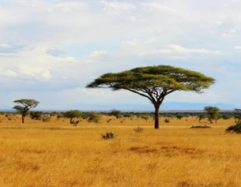
Fantasy or Alien Biome
Unusual colors such as blue, turquoise, or purple can be used to create alien planets, magical landscapes, and other fantasy environments.
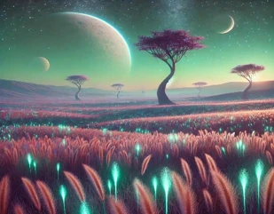
Dark Forest Biome
Darker and less saturated shades of green can create a mysterious, gloomy, or particularly dense forest atmosphere.
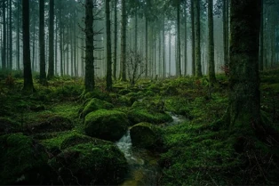
Tropical Jungle Biome
Strong, saturated green tones can make vegetation appear more vibrant, colorful, and lush.
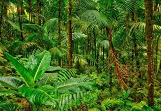
These images are visual references for possible color palettes, not actual Hytale screenshots.
Which Blocks Can Be Tinted?
Tinting can be applied to various supported terrain and vegetation blocks.
Examples include:
Grass blocks
Plants
And even more!
The actual tinting capabilities depend on the individual block and its configuration.
Limitations
Not every block in Hytale supports tinting in the same way.
Some blocks use predefined colors or textures that cannot easily be modified through a Tint Provider.
Possible workaround: Creating custom blocks and adjusting their configurations can provide additional control over how specific blocks respond to tinting.
This allows developers to overcome some of the limitations of the default blocks and expand their available color options.
Advantages of Tinting
Tinting offers significant visual flexibility without requiring a separate texture for every color variation.
It is especially useful when creating large biomes, as similar terrain and vegetation blocks can be transformed into completely different environments simply by changing their color palettes.
For example, the same grass blocks could be used to create a lush green forest, a dry yellow savanna, a dark swamp, or a blue alien landscape.
Summary: Tinting is an important tool for visually customizing biomes in Hytale WorldGen V2. It allows developers to adjust the colors of existing terrain and vegetation blocks to match different climates, atmospheres, and artistic styles.
Tint Provider Overview
Hytale WorldGen V2 currently offers three different Tint Provider nodes:
Constant TintProvider
DensityDelimited TintProvider
Mix TintProvider
Each provider offers different possibilities for controlling how colors are applied to the environment.
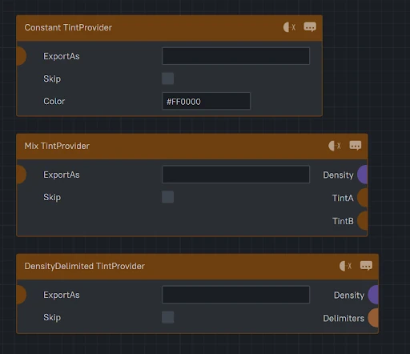
Constant TintProvider
The Constant TintProvider allows developers to define a single, fixed color using a hexadecimal (HEX) color code.
This color is applied uniformly to all tint-compatible blocks within the affected terrain or biome, overriding their default tint colors.
Available Settings
ExportAs: Currently non-functional, as the Import TintProvider node has not yet been implemented. This option is intended to allow Tint Providers to be referenced and reused.
Skip: Allows developers to temporarily bypass the configured tint color and display the default green coloring instead. This is useful for comparing customized tinting with the default appearance.
Color: Defines the tint color using a hexadecimal (HEX) color code, such as
#FF0000
for red or
#3A7330
for green.
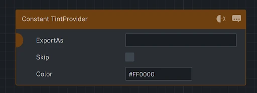
External Color Picker
A useful website for selecting colors and obtaining hexadecimal color codes is:
This tool allows developers to visually select colors and copy their hexadecimal values directly into the Color field of the Constant TintProvider.
Suggested Future Improvement: Integrated Color Picker
Currently, colors must be entered manually using hexadecimal color codes.
A useful future improvement would be to integrate a visual color picker directly into the WorldGen V2 Node Editor.
This would allow developers to select and adjust colors without switching between Hytale and external websites or applications.
Such an improvement would simplify the workflow, speed up biome development, and make experimenting with different color palettes significantly more convenient.
DensityDelimited TintProvider
The DensityDelimited TintProvider allows you to use different types of Density functions to control how colors are distributed across the terrain.
The selected Density function determines the patterns and distribution of colors, allowing you to create a wide variety of visual effects.
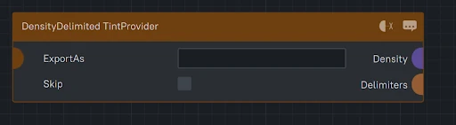
Delimiters / Delimiter DDTP
Tint
The Tint setting allows you to further customize each defined range by connecting additional TintProvider functions or assigning a fixed color using a Constant TintProvider.
This makes it possible to create more complex color variations within individual ranges or simply apply a single color to a specific section.
Range
The Range setting determines how different colors are assigned to Density values between -1 and +1, where -1 represents the minimum and +1 represents the maximum.
In this example, I used four different colors, each assigned to a range with intervals of 0.5.
The colors progress from dark to light, creating a natural-looking variation across the terrain.
When using Simplex Noise 2D, this produces smooth, organic-looking patterns with transitions between darker and lighter areas.
However, the final color distribution depends on the Density function being used. Different Density functions can produce completely different patterns, even when the same colors and range settings are applied.
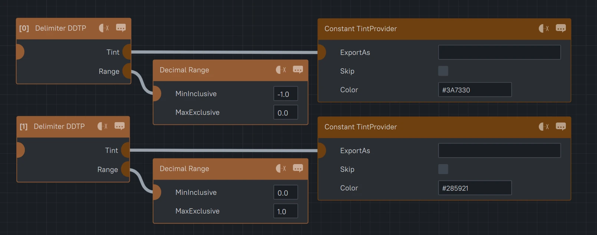
Example: Simplex Noise 2D vs. Cell Noise 2D
In this example, we compare Simplex Noise 2D and Cell Noise 2D.
Both use exactly the same tint settings, but the results look completely different because of the Density function being used.
This demonstrates how the Density function controls the arrangement and distribution of colors across the terrain, while the Tint and Range settings determine which colors are applied.
SimplexNoise2D Density
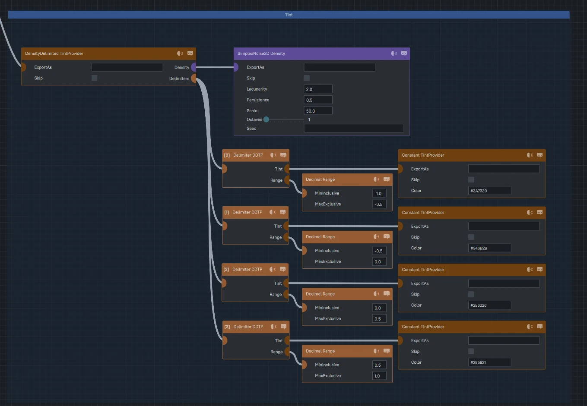
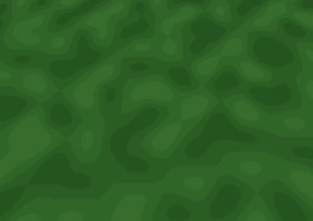
CellNoise2D Density
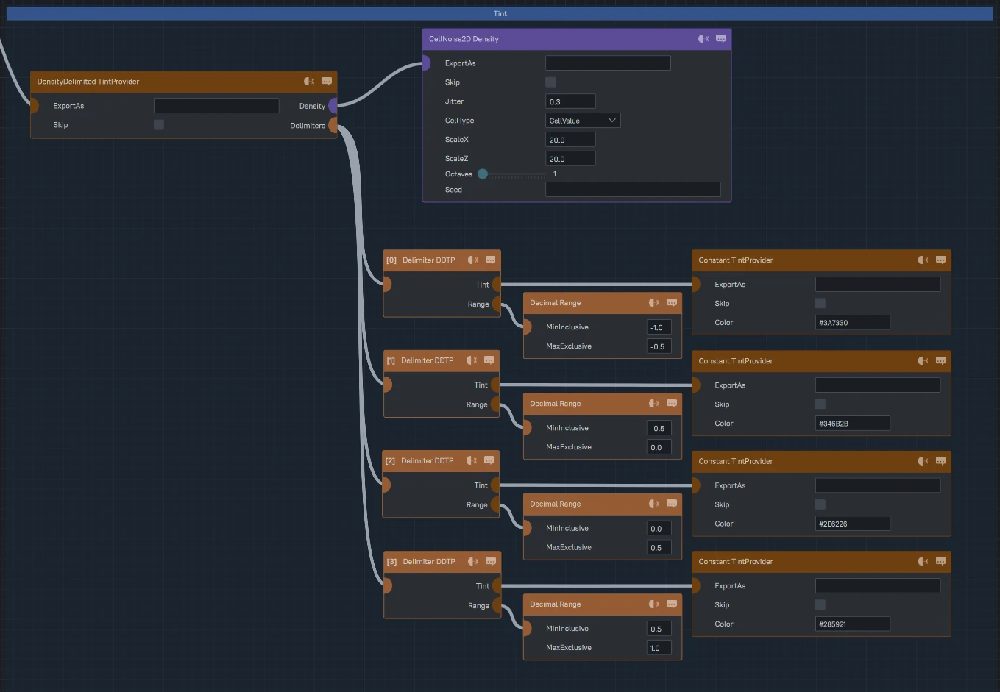
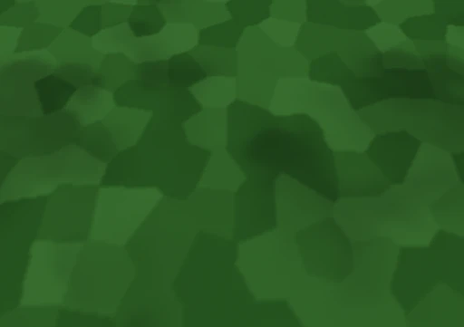
Using 2 colors with the same SimplexNoise2D Density as in the Terrain